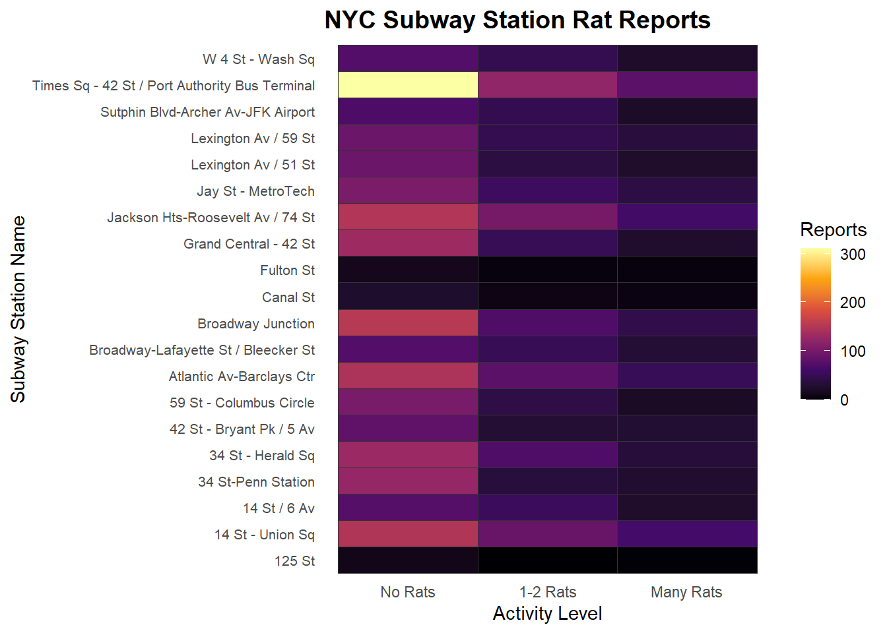

Using data from Transit, a crowd-sourced NYC app, we will create an animated map of some of the smallest (and probably the nicest) New Yorkers: rats! We will be looking at reports from April 2 - May 2, 2026. The app has separated the rat sightings into 3 categories, which we will keep: none: stations where there were no reported rats one or two: stations were 1 or 2 rats were sighted, and so many: stations with a lot of rodent sightings.
We will be using this app data to create a heatmap showing rodent activity of 20 subway stations.
First, let’s select our needed libraries, load our dataset, and take a peek at our data.
library(tidyverse)
Warning: package 'tidyverse' was built under R version 4.5.3
Warning: package 'ggplot2' was built under R version 4.5.3
Warning: package 'tibble' was built under R version 4.5.3
Warning: package 'tidyr' was built under R version 4.5.3
Warning: package 'readr' was built under R version 4.5.3
Warning: package 'purrr' was built under R version 4.5.3
Warning: package 'dplyr' was built under R version 4.5.3
Warning: package 'stringr' was built under R version 4.5.3
Warning: package 'forcats' was built under R version 4.5.3
Warning: package 'lubridate' was built under R version 4.5.3
── Attaching core tidyverse packages ──────────────────────── tidyverse 2.0.0 ──
✔ dplyr 1.2.1 ✔ readr 2.2.0
✔ forcats 1.0.1 ✔ stringr 1.6.0
✔ ggplot2 4.0.3 ✔ tibble 3.3.1
✔ lubridate 1.9.5 ✔ tidyr 1.3.2
✔ purrr 1.2.2
── Conflicts ────────────────────────────────────────── tidyverse_conflicts() ──
✖ dplyr::filter() masks stats::filter()
✖ dplyr::lag() masks stats::lag()
ℹ Use the conflicted package (<http://conflicted.r-lib.org/>) to force all conflicts to become errors
library(gganimate)
Warning: package 'gganimate' was built under R version 4.5.3
library(viridis)
Warning: package 'viridis' was built under R version 4.5.3
Loading required package: viridisLite
rats <-read_csv("transitappratreports.csv")
Rows: 371 Columns: 6
── Column specification ────────────────────────────────────────────────────────
Delimiter: ","
chr (2): station_name, lines_served
dbl (4): station_id, so_many, one_or_two, none
ℹ Use `spec()` to retrieve the full column specification for this data.
ℹ Specify the column types or set `show_col_types = FALSE` to quiet this message.
cat("Raw data dimensions:", nrow(rats), "rows ×", ncol(rats), "columns\n")
Raw data dimensions: 371 rows × 6 columns
cat("\nFirst few rows:\n")
First few rows:
print(head(rats))
# A tibble: 6 × 6
station_id station_name so_many one_or_two none lines_served
<dbl> <chr> <dbl> <dbl> <dbl> <chr>
1 17700 Grant Av 12 11 4 A
2 17921 Great Kills 2 5 12 SIR
3 17670 116 St 0 11 2 A C B
4 17920 Eltingville 2 4 16 SIR
5 17924 New Dorp 2 4 16 SIR
6 17549 116 St 6 18 9 2 3
Next let’s clean up the data, select the top 20 stations, and then modify our data in into a format that would look better as a heat map
Next, generate the heatmap. The x axis of the heatmap will show our 3 categories (none, 1-2 rats, and soo many rats). The y axis lists the top 20 rat-tastic subway stations. A dark purple color indicates there are few rat reports, and a yellow color is indicative of high rodent sightings.
ratmap <-ggplot(data_long, aes(x = activity_level, y = station_name, fill = count)) +geom_tile(color ="grey20", size =0.3) +scale_fill_viridis_c(option ="inferno", name ="Reports", na.value ="white") +scale_x_discrete(labels =c("none"="No Rats", "one_or_two"="1-2 Rats", "so_many"="Many Rats")) +labs(title ="NYC Subway Station Rat Reports",x ="Activity Level",y ="Subway Station Name" ) +theme_minimal(base_size =11) +theme(panel.grid =element_blank(), axis.text.y =element_text(size =8),plot.title =element_text(size =14, face ="bold"))
Warning: Using `size` aesthetic for lines was deprecated in ggplot2 3.4.0.
ℹ Please use `linewidth` instead.
print(ratmap)

Next, use gganimate to create a more dynamic heatmap. We will see a loop of the severity levels to see which stations are consistently popular among rodent New Yorkers.
animated <-ggplot(data_long, aes(x = activity_level, y = station_name, fill = count)) +geom_tile(color ="grey20", size =0.3) +scale_fill_viridis_c(option ="inferno",name ="Reports",na.value ="white" ) +scale_x_discrete(labels =c("none"="No Rats", "one_or_two"="1-2 Rats", "so_many"="Many Rats") ) +labs(title ="NYC Subway Station Rat Reports",x ="Rat Activity Level",y ="Subway Station Name" ) +theme_minimal(base_size =11) +theme(panel.grid =element_blank(),axis.text.y =element_text(size =8),plot.title =element_text(size =14, face ="bold") ) +transition_states(activity_level, transition_length =1, state_length =3, wrap =TRUE) +ease_aes("linear")
The moment of truth…….rendering and saving the animated heatmap into a GIF that goes through the 3 cycles every 3 seconds.
print(animated)
CongRATS! We have now made an animated rat-tastic heatmap of 20 New York stations!